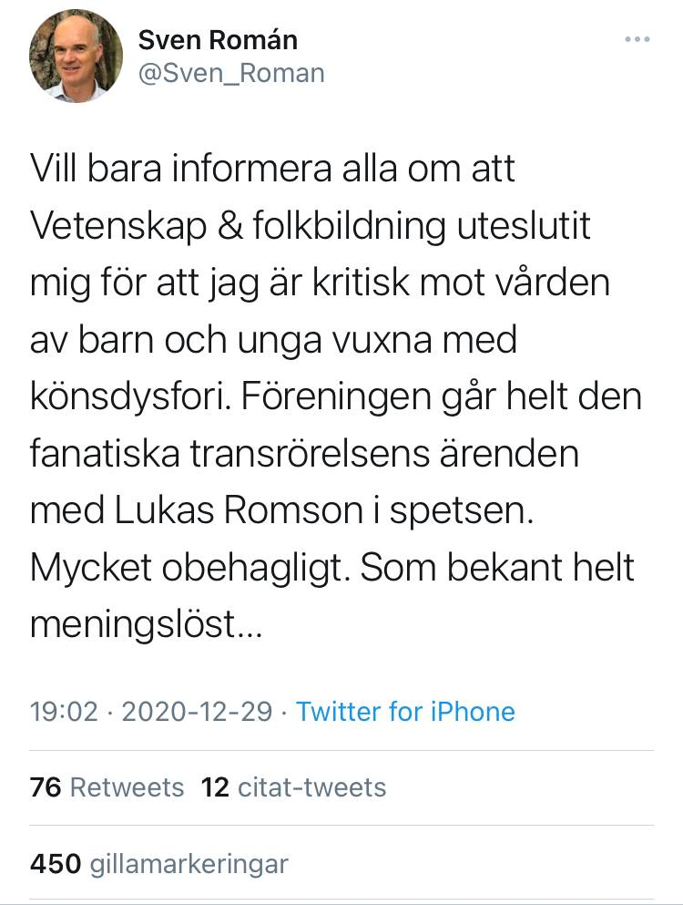

ALo
initierare
28 dec 2020, 16:13
Diskussion och kritik om olämplig filterlänk i Aktiva-gruppen just nu. Det gäller könsdysfori-artikeln.
Samtal · 28–31 december 2020
Tio personer skriver en text tillsammans, mening för mening, mellan jul och nyår. 468 meddelanden på fyra dygn.
Biskop Brasklapp: Roller och färger är lekfull redaktionell tolkning av gruppdynamiken vid ett tillfälle och skall inte läsas som ett utlåtande från Oraklet i Delfi.
Deltagarna är Vetenskap och folkbildnings riksstyrelse verksamhetsåret 2020. Initialerna är arkivets aktörskoder.
Nämnda i tråden, inte deltagare:
Diskussion och kritik om olämplig filterlänk i Aktiva-gruppen just nu. Det gäller könsdysfori-artikeln.
I öppna gruppen, där länken publicerades är diskussionen ganska upphetsad.
Jag noterar att artikeln i fråga inte är med i den ursprungliga listan som skickades ut till styrelsen.
Hm. Var hittar jag den listan? Hur kom det in nya artiklar?
I mejlkonversationen, mejl från Oskar:
On 10 Nov 2020, at 13:56, Oskar Sonn Lindell <oskar@magasinetfilter.se> wrote:
Hej DK,
Har gjort en lista över reportage som jag tänker mig skulle kunna intressera era medlemmar. Totalt tolv stycken. Skulle du vilja se över den – lägga till, ta bort – och återkomma? Tänker mig att tio reportage vore ett bra antal.
1 Thomas Erikson: magasinetfilter.se/granskning/omgiven-av-idioti
2 Manuel Knight: magasinetfilter.se/reportage/en-perfekt-story
3 Föreläsarbranschen: magasinetfilter.se/granskning/blandad-av-ljuset
4 Alternativa cancerbehandlingar: magasinetfilter.se/granskning/i-all-valmening
5 Apatiska barn: magasinetfilter.se/granskning/ohorda-rop
6 Shaken Baby Syndrome del I & II: magasinetfilter.se/granskning/utan-min-dotter & magasinetfilter.se/granskning/utan-min-dotter-del-ii
7 Foodtech: magasinetfilter.se/granskning/kejsarens-grona-klader
8 Byggnadsrelaterad ohälsa: magasinetfilter.se/granskning/det-sitter-i-vaggarna
9 Bortträngda minnen: magasinetfilter.se/reportage/den-stora-glomskan
10 Ätstörningar: magasinetfilter.se/perspektiv/for-dova-oron
11 Antistrålningsrörelsen: magasinetfilter.se/reportage/stralande-tider
12 GMO-debatten: magasinetfilter.se/perspektiv/konsten-att-leka-gud
Ser nu när jag läser högre upp i diskussionen att de föreslog fyra till.
"Har du förberett utkast på Facebookinlägg till de tio spikade artiklarna. Tycker du att några av de övriga som jag skickade är intressanta nog att ta med, så att vi får ihop 12 stycken?
• Könsdysfori: magasinetfilter.se/granskning/fartblinda
• Macchiarinis bortglömda patient: magasinetfilter.se/granskning/den-bortglomda-patienten
• Skandaler inom stamcellsforskningen: magasinetfilter.se/perspektiv/illusionisterna
• Överdrifterna om mikroplaster: magasinetfilter.se/perspektiv/en-svarsmalt-historia
Kanske olyckligt att just könsdysforiartikeln skulle vara den som frontade vårt samarbete med Filter, den skapade mycket debatt och fokus på Filters goda sidor går förlorat
Håller med, den är verkligen problematisk.
jag är dåligt insatt i sakfrågan och har svårt att döma mellan "rätt och fel" men vet att flera i VoF är mycket engagerade i identitetspolitik och HBTQ-frågor
Jag minns ingen diskussion om fyra nya artiklar, var det mejlet till alla?
Nu ser jag att förslagen diskuterades i privat konversation mellan DK och Oskar på filter, så jag ser dem citerade i separat mejltråd.
Tolkar inte diskussionen som "hemlig" så jag hoppas att DK inte tar illa upp att jag citerar här.
Nej ingen skugga över DK, ansvaret ligger ju på oss alla. vi kanske skulle ha tänkt till tillsammans gällande vilken artikel som skulle fronta samarbetet. Könsdysfori-artikeln var nog lite av ett minfält
Jag får ta på mig en del av ansvaret. Jag har inte följt artikeldiskussionerna i detalj, så när jag fick en lista på tolv artiklar att publicera så utgick jag från att styrelsen hade sett den.
Okej, förslag till åtgärd? En edit och ursäkt i originalposten? Eller finns det nåt annat?
Edit: ”Denna artikel blev omdiskuterad och på sina håll kritiserad för blablabla Nu är den upplåst som en del i samarbetet mellan VoF och Filter. Diskutera gärna blablabla”
Föreslår att vi drar tillbaks våra inlägg och publicerar nytt i den publika VoF-Gruppen
I Aktiva-gruppen kanske vi ska mer av dialog med medlemmarna, rent av "pudla"?
Ja, det här var ett klart olycksfall i arbetet.
Jag tänker att vi kan också försöka vara goda skeptiker och problematisera situationen. Att även någon som är en god skeptiker och kompetent på området kan ibland trampa fel. Tacka för att vi uppmärksammades på bristen. Hålla ett online seminarium om artikeln tillsammans med medlemmar som är insatta och låta den stå kvar?
Jättebra reflektion LT
Tycker att det är tillräckligt besvärlig situation för att vi ska ha ett möte och prata om det i styrelsen och inte trilla i nån fight and flight reaktion. Vi har skarpa medlemmar helt enkelt, kul. Vi gör nåt bra av det. Men eftersom att styrelsen adresseras så borde alla få rätt att sitta ner och prata om det. Kan ordföranden och eller lotten dolda ihop oss snarast?
Doodla skulle det stå
Kan vi gå ut med en kommentar i Aktiva så länge?
Bara vi inte försätter oss i en situation där vi tvingas svara innan vi har ett genomtänkt svar.
Jag tror det vore bra att visa medlemmarna att vi i styrelsen noterat och tagit intryck av diskussionen som förts
Ja, vi behöver inte säga nåt superspecifikt.
I så fall tycker jag att vi säger att vi inser att det blivit fel och att vi efterlyser kontakter med personer som har dokumenterad relevant kompetens i ämnet för diskussion och utbildning av styrelsen i frågan. I ett andra steg kan vi i så fall utvidga ett sådant samarbete till en föreläsning eller ett seminarium
Vi behöver visa saklighet, eftertänksamhet och god vetenskaplig ton.
Har pratat med DK i telefon, men det kan vänta. Dessvärre är jag inte riktigt tillgänglig men kan nog komma ifrån en kort stund. Återkommer
Som en första kommentar behöver vi inte gå så långt tycker jag: Erkänna att det blivit fel, att den artikeln inte borde ha varit med och att styrelsen just nu diskuterar både omedelbara och långsiktiga åtgärder.
Bra!
Jag tycker att vi behöver inte nödvändigtvis säga att den inte borde vara med. Vi kan säga att det inte speglar styrelsens åsikt i frågan, uppmana medlemmar till att fortsatt vara kritiska och att vi just nu jobbar med åtgärder för att sätta oss in i problemet. Samt att vi söker information för att vidareutbilda oss i frågan och återkommer med åtgärder. Viktigt att visa att vi tror på principen att söka efter bra vetenskap och att förhålla oss till sådan.
Hur många kan ta ett Zoom-möte redan 17:30?
Hej! Jag har för säkerhets skull läst igenom artikeln igen. Den refererar till forskning som problematiserar allt för lättvindiga könskorrigeringsbeslut på flera ställen, påpekar brist på forskning som stöder det. Att detta är ett kontroversiellt ämne är en annan sak. Men jag vill gärna veta om det står felaktigheter, jag kan vara biased i detta ämne.
Jag kan 17.30
jag kan
Läs sven Romans kommentarer i tråden
Jag kan
Topic: Info Vof's Zoom Meeting
Time: Dec 28, 2020 05:30 PM Amsterdam, Berlin, Rome, Stockholm, Vienna
Join Zoom Meeting
Zoom-länk till mötet 17:30
Meeting ID: 861 6716 7053
Passcode: 336517
Mitt batteri dog plötsligt!
Förslag: Jag och LT bollar på kort text som edit av originaltråden. Återkommer här när utkast finnes, innan post i gruppen.
Sticker.
Sticker.
Sticker.
Kanon
Sticker.
Vi bör nog hålla koll på vad som händer i stora gruppen. En av våra administratörer tycks ha hotat en av vad jag kan bedöma, mycket vederhäftig och lågaffektiv debattör med att ta bort ett enstaka inlägg som saknade referens ( han har redan givit ett tiotal referenser och är expert inom området). Andra, som inte delar hans åsikt, tycks det inte ställas samma krav på.
Sent omsider vaknade jag upp till denna diskussion (var uppslukad i bokföring) - ber om ursäkt för det. Jag ser dock att ni för en saklig och vettig diskussion om situationen.
För att vara lite motvikt till vad som alla verkar samstämmiga kring (typ av åtgärder osv) så vill jag framföra två poänger jag noterade i denna tråd som jag inte såg så mycket fortsatt diskussion kring:
1 - Att det är viktigt att se om artikeln, även om den berör kontroversiella ämnen med mycket känslor, faktiskt innehåller faktafel. Vilken åldersgräns som bör finnas för könskorrigeringar är ändå en sund debatt som bör föras - det kanske inte är ultimat att inte förhålla sig till myndighetsålder, åtminstone inte för lättvindigt dra igång en könskorrigeringsprocess för unga individer.
2 - Att vi bör hålla kolla på admin i stora gruppen. När ämnen som är infekterade avhandlas är det extra viktigt att det inte verkar som att VoF ställer högre krav på inlägg från ena sidan än från den andra.
Jag kan dock hålla med om att artikeln är problematisk om den saknar den andra sidans perspektiv, transperspektivet.
(Håller på att läsa in mig på allt nu, ledsen om jag är osynk med er andra)
Bara så att du har det klart för dig LK så kom vi fram till i mötet att mera fokusera på hur vi ska formulera att VoF inte tar ställning i sakfrågan än att komma med ett definitivt svar på själva sakfrågan. Bara så att du inte försöker läsa in dig för mycket. ;)
Tack! Kom just på att jag kanske skulle fråga vad ni kom fram till!
Jag skulle kanske också vilja föreslå att vi tar bort eller omformulerar lite av vår text i trådstarten, ffa där vi uttrycker att Filter har ”avslöjat” något.
Håller med. Det är formulerat som att vi tycker artikeln är förträfflig.
Och det är ju problematiskt.
Så hur är gången nu?
LT och KA jobbar fram en redigering som vi lägger in efter att Aktiva fått se den. Därefter ett mer detaljerat inlägg som publiceras av PB.
Tack för info. Låt mig veta om jag kan göra något.
Utkast v1 · 19:49 · KA
Utkast från mig o LT:
Istället för den gamla texten i trådstarten lägger vi upp:
”Edit: Denna artikel och trådstarten om den har givit upphov till intensiv diskussion på vårt forum. Den är en av totalt tolv artiklar från Magasinet Filter som gjorts tillgängliga för VoFs medlemmar tack vare ett samarbete mellan VoF och Filter. Detta är förstås inte likställt med att VoF:s styrelse delar de åsikter som beskrivs i texterna eller slutsatserna som skribenterna drar. Eftersom den ursprungliga trådstarten gav det felaktiga intrycket av att vi instämmer i slutsatserna i artikeln, redigerar vi nu inlägget.
Värdet i samarbetet tycker vi ligger i att ge medlemmarna tillgång till reportage där resonemang om komplicerade frågor ges utrymme att utvecklas. Sen står det var och en fritt att bilda sig en egen uppfattning i sakfrågan, och vi är glada att se att så många nyanserade och nyanserande perspektiv framläggs här nedan.”
Jag tycker inte vi behöver göra någon annan separat tråd, eftersom metadiskussionen redan pågår i originaltråden
Ska det vara "gav det felaktiga intrycket" eller "kunde ge det felaktiga intrycket". Det senare tycker jag är något bättre.
Ska hela ursprungstexten tas bort?
Noted, Per. Instämmer.
Kanske ngt bör behållas?
Not i all hast: vi har ett separat forum, men det är en annan plattform. Diskussionen har väl bara varit på Facebook
Aha, förlåt, menade forum i mer allmän bemärkelse. Men ändrat till Facebook-grupp
Om vi helt ändrar ursprungstexten blir det ganska kontextlöst, och en smula förvirrande för nytillkomna.
Men länk-texten ligger kvar, så pass mkt att man kan förstå vad temat är.
En del kommentarer har väl delvis gällt vår text, så det är nog förvirrande att at bort den?
Fast om man refererar till en tidigare text kan det vara bra om den texten ligger kvar.
Det ärligaste är ju att låta texten ligga kvar som den var och sen lägga KA:s och LT:s text.
Tidigare versioner av trådstarten kommer är ju tillgängliga för den som är nyfiken.
Tror mest att det blir lite otympligt.
Ursäkta dubbla verb, multitaskar.
Kanske snarare lägga till den nya texten överst (det som folk läser först), och låta originaltexten ligga kvar under för transparens?
Men jag förstår den som tycker det känns revisionistiskt.
Jag har svårt för denna del som jag tycker kan tas bort: "Eftersom den ursprungliga trådstarten gav det felaktiga intrycket av att vi instämmer i slutsatserna i artikeln, redigerar vi nu inlägget". Det låter som ett ställningstagande emot artikeln.
Vi har ju redan konstaterat att ett fel vi gjorde var att vi var otydliga.
Kanske "... att vi tar ställning i sakfrågan" ?
Möjligen. Men behövs det stycket ?
Stycket förklarar varför vi redigerar inlägget.
Jag gillar ALo:s förslag.
"Eftersom den ursprungliga trådstarten gav det felaktiga intrycket av att vi tar ställning i sakfrågan, redigerar vi nu inlägget"
Om det är så att människor har fått intrycket att vi har tagit ställning så kan det vara bra att påpeka att vi observerat det och att vi därför förtydligar att vi inte har tagit ställning.
Och jag vidhåller att vi inte ska använda "gav" utan "kunde ge".
+1
Ja, det är bättre. Men det framgår ju av vår inledning varför vi gör en "edit"
Hel rätt, PJ!
"Eftersom den ursprungliga trådstarten kunde ge det felaktiga intrycket av att vi instämmer i slutsatserna i artikeln, redigerar vi nu inlägget"
Men jag tänker inte sätta mig på tvären, det är ok med adrians förslag om vi har konsensus
DK, det gör det ju väl inte. Det konstaterar ju bara att det givit upphov till en diskussion.
Men denna formulering är inte ok anser jag (från LK) "Eftersom den ursprungliga trådstarten kunde ge det felaktiga intrycket av att vi instämmer i slutsatserna i artikeln, redigerar vi nu inlägget". Gillade "ta ställning" mer.
Utkast v2 · 20:08 · KA
Utkast från mig o LT:
Istället för den gamla texten i trådstarten lägger vi upp:Okej, nuvarande förslag är denna text, som läggs ovan den äldre.
”Edit: Denna artikel och trådstarten om den har givit upphov till intensiv diskussion på vårt forum. Den är en av totalt tolv artiklar från Magasinet Filter som gjorts tillgängliga för VoFs medlemmar tack vare ett samarbete mellan VoF och Filter. Detta är förstås inte likställt med att VoF:s styrelse delar de åsikter som beskrivs i texterna eller slutsatsernainstämmer i de slutsatsersom skribenterna drar. Eftersom den ursprungliga trådstarten gav det felaktiga intrycket avkunde ge det felaktiga intrycket att vi tagit ställning i sakfrågan elleratt vi instämmer i slutsatserna i artikeln, redigerar vi nu inlägget.
Värdet i samarbetet tycker vi ligger i att ge medlemmarna tillgång till reportage där resonemang om komplicerade frågor ges utrymme att utvecklas. Sen står det var och en fritt att bilda sig en egen uppfattning i sakfrågan, och vi är glada att se att så många nyanserade och nyanserande perspektiv framläggs här nedan.”
Håller med om att "ta ställning" är bättre.
Ta bort delen med instämmer
"att vi tar ställning i sakfrågan" eller "tar ställning till slutsatserna i artikeln"?
Jag vet inte om det är lite väl simplistiskt att beskriva det som att ta ställning till en sakfråga, låter lite som om man ska vara ”för” eller ”emot”
Rent stilistiskt kan jag tycka att det blir lite för nyanserat här:
"att se att så många nyanserade och nyanserande perspektiv "
Jag skulle ta bort ett av dem.
För att inte klippa in allt varje gång, det som vi inte landad i är alltså den här stycket?:
"Eftersom den ursprungliga trådstarten kunde ge det felaktiga intrycket att vi tagit ställning i sakfrågan eller att vi instämmer i slutsatserna i artikeln, redigerar vi nu inlägget."
Jag som tyckte det var lite käckt :)
Men fair enough :)
Kill your darlings. :(
Ta bort "eller att vi instämmer i slutsatserna i artikeln"
Kanske är lite väl tårta på tårta ändå.
Jag kan hålla med DK här. Dessutom vill vi vara korta och koncisa, så det är bra att korta ner vissa meningar.
Dessutom
Fair points.
Jag tycker vid närmare eftertanke att artikeln är rätt osaklig och kan tänka mig att markera lite tydligare avstånd från deras narrativ.
Då har vi ett annat problem. Jag tycker den i stort är bra.
Därför fungerar också den formulering jag föreslagit. Vi tar inte ställning - styrelsen är ju oenig.
Nåja, vi måste kanske inte enas därvidlag. Vi får välja en så neutral formulering som möjligt
Det är ett knepigt ämne, men den diskussionen får vi ta annorstyä'des
Okej med mig om ni andra vill välja formuleringen ”tagit ställning i sakfrågan” och ta bort resten
❤
😍
Sticker.
Helt ok från mig!
Nu har jag läst ikapp! Helt i sin ordning för min del också🌟
Ok, edit enligt KA:s senaste textdump alltså. Hur gör vi med nyanserad/nde?
"Kill your darlings", som PJ skrev 🙂 Uppfattade jag det som. Bara ha kvar "nyanserade"
Instämmer r
Min handledare säger att jag mångordig
Jag vet inte hur den senaste ser ut. Den senaste jag hittar har kvar formuleringen om att "ta ställning".
*är
Okej nytt utkast:
Jag har exakt samma läge... Därför har jag lättare med krönikor än rapporter!
Utkast v3 (final) · 20:28 · KA
Okej, nuvarande förslag är denna text, som läggs ovan den äldre.
”Edit: Denna artikel och trådstarten om den har givit upphov till intensiv diskussion på vårt forum.en intensiv diskussion i vår Facebookgrupp.Den är en av totalt tolv artiklar från Magasinet Filter som gjorts tillgängliga för VoFsVoF:smedlemmar tack vare ett samarbete mellan VoF och Filter. Detta är förstås inte likställt med att VoF:s styrelse delar de åsikter som beskrivs i texterna eller instämmer i de slutsatser som skribenterna drar. Eftersom den ursprungliga trådstarten kunde ge det felaktiga intrycket att vi tagit ställning i sakfrågan eller att vi instämmer i slutsatserna i artikeln,sakfrågan,redigerar vi nu inlägget.
Värdet i samarbetet tycker vi ligger i att ge medlemmarna tillgång till reportage där resonemang om komplicerade frågor ges utrymme att utvecklas. Sen står det var och en fritt att bilda sig en egen uppfattning i sakfrågan, och vi är glada att se att så många nyanserade och nyanserande perspektiv framläggsså många nyanserade perspektivhär nedan.”
Hoppas jag inte glömt nåt
I mina ögon toppen och redo att exekueras!
ok
En snabb fråga. Ska det vara Vof styrelse som inte tagit ställning eller VoF föreningen som inte tagit ställning.
"... inte likställt med att VoF:s styrelse delar de åsikter ..."
Borde det inte stå VoF bara?
Jo
Bra
Haha, pucktvåa.
Sticker.
Skulle PB återvända nåt ikväll? Eller kör vi?
Ordf bör ha sista ordet
Han kanske vill ha denailability?
Jag säger kör! HAr hållt ett öga här trots att jag egenligen gör nåt annat
Och SL?
Vem lägger upp "förslaget" i Aktiva?
Ska vi skriva ngt mer till dem?
Du menar utöver förslaget?
Tycker @ALo kan göra det han har skött kontakten med dom mest.
@Ok.
Känns ok för dig ALo?
No probz.
Hallå kudos till samtliga för smidigt och snabbt agerat
Instämmer med KA. Jäklar vad vi varit bra på krishantering/snabba puckar det här året! <3
Fast jag är krämkt
not
(Menar inte att vi varit dåliga innan, bara att jag noterat en extra edge år 2020)
Ska man vara noga så ska vi inte gratulera oss själva förrän vi har sett var det landar.... evidens och sådant där ni vet.
Då blir det ytterligare en krishantering, vilket vi kommer klara av.
Äsch, A for effort
Jag har nog glömt att berätta att jag hittat en ny nördbästis på Fohm som jag passionerat diskuterar antikroppstestning med. Kan bli nåt fint. Avvaktar lite data bara.
Apropå framgångar 2020 för styrelsen.
Jag blev upptagen med vardag, men tycker att @KA har jobbat fantastiskt bra med värdefulla inspel från många andra! Bra jobbat i en svår fråga där vi tycker lite olika
"The beginning of a beautiful friendship"? 😀
LT var faktiskt inblandad också. 🙋🏻♀️
Ja! Kanon KA o LT! Å vi andra
Kolla LSL:s kommentar i Aktiva.
mest jag .... jag var bäst....sen KA. Allra bäst var jag. Jag gjorde nästan allt jobb. Typ tre ändringar. Såatteeee man drog sitt strå till stacken som den slitvarg man är 🤣🤣😂
@LT sorry! Bra jobbat så klart av LT (som alltid) 😊
Be om ursäkt??
Alla är lika bra säger man på dagis!😃
LSL
ALo Det kan vara bra att någonstans i texten skriva ”Vi ber om ursäkt”
Vissa i gruppen verkar ha blivit väldigt illa berörda.
Snyggt jobbat att ni snabbt fick till en diskussion i styrelsen!
Jag tycker inte att vi ska be om ursäkt.
Det tycker verkligen inte jag heller.
Kan inte heller se någon anledning att be om ursäkt.
Nej, det gör man bara om man har gjort fel och folk har tagit illa vid sig av det. Och det har ju... eh...
Nej alltså allvar @KA gjorde det mesta jobbet. Jag hejade på glatt, och kom med självklarheter hon redan sett.
Vi gjorde inte ett direkt fel - vi uttryckte oss klumpigt vilket gjorde att vi verkade tycka si eller så istället för att vara neutrala. Vi har korrigerat och uppmärksammat våra medlemmar på korrigeringen och tankarna bakom den. Ingen ursäkt nödvändig, enligt min åsikt.
Det är oundvikligt att vi då och då förargar våra följare. En anledning, av vad jag kan minnas, att vi inte tog i denna fråga förra året var att den var känslig.
"Vi ber om ursäkt om någon tog illa upp"
Möjligtvis skulle den formuleringen vara än värre än att faktiskt be om ursäkt!
Den är en krock mellan grundläggande medicinsk etik och en del transpersoners förtvivlan
Vi får nog invänta PB här. Men det vore befängt att be om ursäkt för något sånt här.
LK, jag hoppas att du fattade att jag var ironisk.
Eller var jag?
Naturligtvis - har känt dig ett tag vid det här laget, ALo! ;)
Den som ber om ursäkt skall be om ursäkt för att vederbörande ber om ursäkt
Mycket klokt.
Att gladeligen pudla för en ogenomtänkt formulering som kan signalera fel ställningstagande är en sak. Att be om ursäkt är att erkänna att ett fel har begåtts (i det här fallet att stå bakom att artikeln tillgängliggörs). Har vi inte planer på att plocka bort länken till artikeln blir det konstigt att be om ursäkt för den.
*signalera ETT ställningstagande
Va? Skall vi plocka bort länken!?
Felet vi begick var att inte tydligt kommunicera varför just denna länk delades. Det är därför vi krishanterar. För att vi begick det felet.
Nej, ingen (av oss) verkar vara inne på att ta bort länken
Nämen varför det? Är det inte bra att diskussionen förs. Uppenbart är den intressant ATT diskutera
DK, läs LK:s text igen, noggrant :-)
Timmen börjar bli sen :). Håller med om att ursäkt ej fodras
Kan både DK och CSm läsa vad jag skrev... haha
Vi borde kanske redan i början av artikelserien skrivit något om att en del artiklar kan uppfattas kontroversiella
Förlåt 😥
Det är svårt att skriva något i början av artikelserien nu tyvärr.
PJ- du kan ju trolla
Trolleri trollera trolleralla
Min poäng var alltså att eftersom vi INTE planerar att plocka bort länken till artikeln borde vi inte be om ursäkt för att vi tillgängliggör den 🌸
Förlåt, två glas vin efter helkroppsmassage har tydligen en märklig inverkan på hjärnan..
Jag är dum
"VoF:s styrelse" eller "föreningen" ?
Jag tror flera av oss är ungefär två glas vin in på kvällen
I texten "... likställt med att VoF:s styrelse delar de åsikter ..."
”VoF” bara
Ospecifikt och bra
Jag har druckit en folköl. Det är det jag max klarar av
Håller med KA
Vad var detta en fråga om? Jag drunknade i meddelanden om hur mycket folk druckit ikväll 😆
Gå in och läs på aktiva gruppen. Vi får inte direkt stöd av dom. Nu ska vi ta ställning också. Förutom att be om ursäkt. Måste natta mig själv en stund innan gulliganen vaknar för nattpasset. Kollar in här regelbundet under natten.
Ferlåt
Bara VoF, kort och tydligt (egentligen ospecifikt som KA påpekade.)
Ta hand om dig själv och gulliganen.. viktigast ändå
@KA Ser att du är inne i kommentarsfältet och ställer mycket rimliga motfrågor! Men ska vi kanske försöka ena oss kring hur vi svarar från styrelsens sida?
Och de som anser sig ha druckit för mycket vin för att hänga med i svängarna är kärleksfullt ursäktade <3
Tack för både kärleksfullt ursäktad och för gliringen❤️
Ja, förlåt, det kanske vi ska
Om vi kan?
Jag antar att det skulle anses som något olämpligt att be om ursäkt för att vi bara lyckades hitta en artikel av 12 som klarade av att väcka någon form av uppmärksamhet?
Det är ett skämt. Om någon druckit för mycket...
Om vi ska engagera ”Aktiva”-gruppen kanske vi bör 1) välja om vi bör hörsamma deras åsikter, 2) välja om vi bör bemöta deras åsikt gemensamt och 3) i sånt fall författa ett gemensamt svar
Känns som ännu en meckig uppgift
Som Eva sa. Anledningen att inte ta saker med Aktiva först är att då händer inget.
Jag tycker att tonen i aktiva är ganska otäck och enögd. Jag tycker det är tråkigt att jag får en tanke om att man skulle kräva min avgång om jag skulle skriva att jag kan förstå båda sidorna i diskussionen om könskorrigering.
@KA Menade inte att call you out - såg bara i diskussionen där att du inte tolkas som en enskild medlem i VoF som vem som helst som argumenterar, utan du ses som en representant för styrelsen. Dessvärre något vi alla i styrelsen måste leva med, särskilt i hettade diskussioner!
Fattar totally
Jag tycker inte det är vår uppgift att ha en åsikt i transfrågor. Inte någon, åt något håll.
Och Aktiva i VoF bör inte gå åt ett håll där det är så självklart vilken ställning man tar inom en fråga som de facto är väldigt nyanserad och har många lager att man får jämföras med att argumentera som SD:are om man ställer en rimlig motfråga.
Så som privat personer så kan vi ha vilka åsikter som helst men det är knappast våran uppgift att gå omkring och ha åsikter.
Jag tänker (alltså finns jag) att det kanske inte är ett problem (men jag har ju druckit vin😇) att det blir diskussioner. Folk avkräver ursäkter (ser jag), för mig väcker det en mängd frågor. En är, finns inte utrymme för skiljaktigheter? En annan är, är världen till för de enögda?
Den tredje är, hur skulle världen kunna beskrivas utan nyanser?
Snyggt svarat sist där, KA 🌸
Jag tror dessvärre att en del skribenter i aktiva inte anser att denna fråga kan nyanseras. Jag tycker aktiv-medlem-A har massor med klokhet annars men
Vi kommer nog inte kunna lösa detta utan att någon blir sur.
...hon är ganska kategorisk i denna diskussion
Problemet kan ju vara att man kan bli allt för kunskapsrelativistisk för en vetenskaplig förening. Men i det här fallet är ämnet lite mer komplicerat och saknar historiska vetenskapliga underlag (eftersom könskorrigeringar sågs som något man måste steriliseras för fram tills för några år sedan)
jag ska aldrig skriva snabbt igen
"saknar historiska vetenskapliga underlag" är väl att ta i lite va?
Jag har jobbat en del med transvård och alla tvärsäkra övertygelser jag hade innan har jag nu tvingat överge till fördel för en genuin förvirring
LK har ju en väldigt bra poäng med hur man till för några år sedan behövde steriliseras för att genomgå könskorrigering och man borde då idag vara lite mera försiktig med att utgå från att man vet precis vad som är rätt eller fel i frågan.
Jag har också druckit ett par glas... Menade att underlagen inte är så imponerande i mängd som inom andra områden.
Det var väl ungefär vad jag menade. I detta specifika fall.
Okej men hörni - ska vi bemöta Aktiva eller bara köra på så som planerat?
Jag anser det lite svårt att ta ställning till utan ordförandes input
Funderar på om aktiv-medlem-A (eller annan kritiker av artikeln) kan erbjudas att skriva ett genmäle? Vore intressant för mig som kan ganska lite om ämnet
aktiv-medlem-B har redan gjort det.
Han har författat en (i min mening) sansad tråd, som väntar godkännande från moderatorerna
Det låter väl som om en bra idé att välkomna debatten.
Jag blir frustrerad. Som styrelsemedlem kan jag inte gå in i debatten.
Förlåt, men det här som är senast i kommentarstråden tycker jag är rätt beklämmande:
aktiv-medlem-A
KA Hade hållt med dig helt om artikeln inte varit just en tydligt politiskt vinklad text. Om argumentet för att den ska kunna delas utan att styrelsen är tydliga med var de själva står i frågan ska det givetvis kunna gälla för alla former av opinionsbildande texter med ett uns av vetenskaplig kritik oavsett avsändare. Annat vore ju rätt hycklande.
Är artikeln verkligen tydligt politiskt vinklad?
I betraktarens öga är det nog så i detta fall
Jag håller inte med henne om att det är en opinionstext
Det är väl bara att be dem förklara vad de menar med tydligt politiskt vinklad.
Men håller med om att den är tendentiös
Precis, vad är inte politiskt liksom?
Men hennes hållning är väl: genom att dela artikeln har vi indirekt tagit ställning ”För” artikelförfattarnas hållning
Vilket jag tycker är ett felaktigt antagande
Lite tendentiös, kanske. Men framförallt en motvikt, anser jag. Som faktiskt bättre möjliggör en nyanserad debatt om frågan.
Tror inte någon avlider om vi ajournerar frågan till morgondagen. Om styrelsen ska komma med något mer eller bara låta det bero.
Ja gissningsvis ändras ingenting vad vi än svarar artikelns kritiker ikväll
Men nu är inte trådstarten editerad va?
Artikeln är skriven ur ett tydligt medicinskt perspektiv - som jag kan sympatisera med även om det som här blir besvärligt. Om man skall göra omfattande irreversibla kirurgiska ingrepp och dessutom administrera medicinering som har kända faror och biverkningar, då skall man ha mycket på fötterna innan man tar ett sådant beslut. Det finns forskning som pekar på att det ändå skulle vara bra för en del. Det finns också forskning som visar att det skapar tragedier. Det är också ställt utom tvivel att det är många med neuropsykiatriska funktionsvariationer - fr.a. autism och andra mycket sköra individer som anmäler sig till könskorrigering. Som klinisk psykolog är jag marinerad med att man skall vara mycket försiktig med att administrera behandlingar som har osäker evidens och som ev. kan vara skadliga. I detta fall är de potentiella negativa effekterna av behandlingen uppenbar. Så att många läkare och även psykologer manar till försiktighet i denna fråga är inte konstigt. Och det är oerhört trist att man då kan bli kallad för transfobisk eller extremhöger.
...och det är denna polarisering i många debatter som skrämmer mig.
Det skrämmer nog väldigt många DK, inklusive mig
Särskilt i just ett community med vetenskapsintresserade människor.
För att svara dig så verkar det inte vara ändrat i stora gruppen i alla fall: Vetenskap och Folkbildning
Ser ändrat ut när jag kollar på det.
Min shit, helt sant. Magiskt uppdaterad efter att jag refreshat sidan tre gånger...
Hehe, efter diverse tekniska problem lyckades jag uppdatera inlägget. Typ en minut innan din kommentar här.
A**hole...
Tråden i publika forumet är nu stängd står det
Ja, vi skulle låsa upp den efter redigeringen.
Jag tycker att aktiv-medlem-B skriver mycket bra. Och jag vidhåller att diskussionen är fruktsam. Den är i många stycken känslostark, men också och mest bestyckad med logik, god argumentationsteknik och en hel del bra om än ilskna kommentarer.
Var hittar jag det ni syftar till som aktiv-medlem-B skrivit?
Meddelandet togs bort av avsändaren.
Meddelandet togs bort av avsändaren.
Jo jo, CSm, vi konstaterade det strax innan jag kallade ALo för "a**hole" 😊
@ALo Vilket jag vill förtydliga kom från ett kärleksfullt ställe!
Meddelandet togs bort av avsändaren.
Efter 2,9 timmars tystnad.
Jag ser att några har väldigt starka åsikter i båda trådarna. Men det är ett fåtal av de som läst som faktiskt är jättearga eller har kritik mot styrelsen. Det är en bra ton på debatten från många dessutom.

Bra ton i allt vete sjutton (bifogad skärmdump), men håller med dig LT i vad du framför i stort"
Det är inte så att något drev hittills startat om att VoF i hemlighet skulle ha samarbete med högerextrema krafter. Men vi borde kanske ha ett getöga öppet för om det drar vidare.
(Om någon frustreras över att min skärmdump inte hade klickbar länk: dn.se/kultur-noje/kulturdebatt/varfor-tiger-filter-om-kopplingen-till-ytterlighetshogern
Just den här killen skulle jag kategorisera som en med starka åsikter
aktiv-medlem-B? Jag är i slutfasen med att gå igenom kommentarstrådarna och kan inte se riktigt annat än att han drar på väldigt stora växlar. Men jag kan ha missat något/ är övertrött vid 02:00 på natten.
Men vad har hänt med läsförståelsen i den här gruppen? Gå och lägg er!
Meddelandet togs bort av avsändaren.
Jag ska göra mitt bästa!
Godmorgon kära kollegor. Hur tänker ni om utfallet från vår editering igår?
Om du menar hur diskussionerna gått i stora gruppen och i aktiva gruppen ser jag ingen reaktion. Det är samma polariserade diskussion med hårda attacker på de som förespråkar försiktighet där man anser att VoF samarbetar med extremhögern (Filter är tydligen en extremhögerpublikation), där ett litet fåtal vågar argumentera för försiktighet och styrker detta med relevanta länkar som underkänns av de flesta andra, även en admin. Man ser dock att de får hyfsat många likes, så det är nog många som hukar i denna debatt.
Förr eller senare hade vi hamnat i ett sådant här läge. Det är snarare märkligt att det inte skett tidigare. Hur man bedömer forskningsresultat, eller bristen på sådana har massvis med infallsvinklar som färgas av folks värderingar och bias. Vi har dessutom mycket skilda uppfattningar om värdet av hermeneutisk forskningsmetodik visavi experimentell, huruvida man alltid skall väga in maktperspektiv - och i så fall hur mycket- i alla data, relativisering av vad som är "god kunskap" etc.
Jag tycker fortfarande att diskussionerna är ganska intressanta. Är det inte att vänta att en relativt provocerande artikel blir kritiserad och föremål för debatt och ifrågasättande?
aktiv-medlem-B är ju själv transman och dessutom engagerad i RFSL.
Utöver det är han jurist och politiker inom S.
Det är i stora gruppen ganska hett mellan några som står på varsin sida om skranket.
Sådana här diskussioner uppstår gärna när två helt begripliga synsätt står emot varandra. Ett annat exempel är bedömningen vid våldtäktsåtal där många jurister har rättssäkerheten som främsta prioritet, medan många andra blir frustrerade över att troliga gärningsmän går fria. Båda perspektiven är begripliga. Och, precis som i den diskussionen vi har rörande könskorrigering finns det extremister på båda sidorna och en tendens att likställa motståndaren med dessa extremister.
Min uppfattning om texten:
Tycker inte att artikeln ger en representativ bild av transvård, inte alls. Den utgörs till största del av två väldigt emotionellt präglade vittnesskildringar, varav den ena endast ger anhörigas perspektiv, och inte transpersonen i frågas. Den kan lika gärna läsas som en historia om en person med psykossjukdom som det gått dåligt för, där könsdysforin inte måste vara det centrala.
Det är rätt mkt brösttoner och detta är knappast en text som kan göra anspråk på att vara vetenskaplig. Tycker inte heller att den kan göra anspråk på att göra frågans komplexitet rättvisa. Men ansatsen med texten verkar ju inte heller vara att göra hela frågan rättvisa, utan att belysa typ kritikernas invändningar. Dessa kritiker finns ju, så varför en text om dem skulle vara fel förstår jag inte. Däremot kan man ju fråga sig varför just vi ska dela denna text, där måste jag ge våra kritiker rätt.
Med detta inte sagt att vi behöver göra ngt annorlunda än tidigare planerat. Möjligen bemöta invändningarna i ”Aktiva” på ngt vis?
Jag kan ge KA rätt där. Texten tar upp, som jag kan bedöma, det traditionellt medicinska perspektivet. Det skulle kunna ha gett större utrymme åt representanter från den sidan som är för färre hinder för könskorrigering för att texten skulle bedömas som opartisk. Min personliga uppfattning är att det medicinska perspektivet är baserat på erfarenheter av för snabbt och lättvindiga behandlingsåtgärder tagna i välvilja, men med för klent forskningsstöd. But that's just me.
Om jag inte missminner mig har Socialstyrelsen nyligen yttrat sig och gått på försiktighetslinjen där de avrått från tidiga könskorrigeringar. Så det finns officiella utlåtanden där man anser att experter har bedömt för- och nackdelar ur ett vetenskapligt och etiskt perspektiv.
Jag tror inte att vi behöver göra mer nu om det inte blossar upp igen.
Fick vi dock reda på hur den artikeln kom med när den inte var bland de tio första förslagen? Var det att vi alla läst mailtrådarna slarvigt?
Nej, det var jag som fick ytterligare två att välja på av fyra och dessa fyra fick bara jag och ALo ta del av. Jag valde två artiklar som jag hade läst och som i mitt tycke (lite naivt) behandlade ett viktigt ämne med en stark fot i evidenskrav. Jag vill dock påpeka att jag fick fritt spelrum av styrelsen att handha kontakten med Filter när vi beslutade om samrbetet. Det fanns dessutom flera artiklar som kunde ha orsakat irritation - t.ex. de om "shaken baby syndrome" eller apatiska barn. I jämförelse med dessa tyckte jag inte att denna stack ut.
Vi alla tillsammans är ansvariga för urvalet av artiklar, anser jag.
Instämmer
Ja, det var en miss att inte styrelsen fick se hela listan innan publicering, särskilt med tanke på att vi många gånger diskuterat Filters ojämna nivå på sina artiklar.
Jag förstår. Tack för förklaring. Håller helt med att hela styrelsen har ansvar, menade inte att indikera något annat.
Efter 21,6 timmars tystnad.
Har ni läst aktiv-medlem-C:s inlägg i Aktiva-gruppen? Kanske värt att diskutera om/hur vi ska svara
Jag håller med
Jag har följt hela tråden, aktiv-medlem-C tror jag var trådstartare. eller är det en ny tråd. Jag skulle vilja läsa artikeln igen och kolla upp lite artiklar innan jag vill yttra mig.
Samma tråd, senaste inlägget
”Okej, styrelsen har förtydligat men inte bett om ursäkt.
Om jag förstår det här rätt så tycker styrelsen att det är bra med allmän debatt som belyser saker från olika perspektiv och att det är viktigt att uppmärksamma just detta ämne bland de tolv artiklarna (vilket är det som alla mottagare ser oavsett intention) och från ett transkritiskt perspektiv (som är det som faktiskt skrevs).
En massa skeptiker som är insatta i transfrågan (inkl de som själva är transpersoner) har blivit arga och ledsna. De tycker att artikeln är vinklad mot trans och är kritiska till att föreningen väljer det perspektivet.
Styrelsen svarat då ungefär att det är bra med debatt och olika perspektiv och att det är en av tolvartiklar.
För mig framstår det som att styrelsen lottat fram vilken artikel de ska fronta och råkat få en som ingen i hela styrelsen är insatt i, eller förstår att de inte är insatt i eller ens hur känslig den är.
Jag tycker det är rimligt att styrelsen ber om ursäkt för att den inte har koll på ämnet eller artikelns karaktär, eller att det var lämpligt att erbjuda den. Vi har gjort det innan med Ingemyrs SD-fadäs (om ni minns) och det är hedrande att kunna erkänna misstag.
För att ta SD som exempel så skulle vi kunna fronta en artikel om hur SD-företrädare blir missförstådda i samhällsdebatten. Det lär finnas massvis med exempel på det, dvs bra empirisk bas, men det är ett konstigt fokus för VoF och obalanserat. Allt som har empiriskt stöd är inte lämpligt för oss.”
Det är samma tråd i Aktiva-gruppen som tidigare
@DK, jag ser ingen anledning att granska artikeln mera. Det finns ”att vara rätt i sak” och ”att göra det rätta”. Vi har ingenting att vinna på att försvara en såpass kontroversiell artikel.
Om vi skall be om ursäkt skall vi ha lika mycket på fötterna som att vi inte gör det. Jag uppfattar inte artikeln som "transkritisk". Däremot är den kritisk till att man allt för lättvindigt godkänner könskorrigering. Men, jag vill läsa om den.
Kan meddela att även admingruppen för sidan har planer på ett möte och jag gissa att de vill framföra kritik.
Anledningen till att jag vill läsa om den igen är att som jag uppfattar kritiken mot artikeln är den osaklig.
Vill ni att jag skall delta i detta utan att ge mig en halvtimma till tycker jag att ni förhastar er.
gissar att ingen kan kasta sig in i möte här och nu, så du bör ha, och få, tid att läsa på tycker jag DK
Läs gärna artikeln en gång till, men jag tror inte det spelar någon roll i detta läget.
Tack!
Sven Roman berättar även i gruppen att han mailat Mattias Göransson på Filter och att denne är ”förfärad” över debatten i diskussionsgruppen. Jag tar detta med en nypa salt.
Jag vet inget om detta, men jag är oroad jag med
DK, har du pratat med Filter sen detta?
Sedan debatten började alltså.
Nej. Men jag har läst tråden flera gånger
Så vare sig Oskar eller Mattias har fått en uppdatering från oss om situationen?
Kan det vara bra om vi tar en kontakt med Filter? Jag har inte klart för mig vilken kontakt som andra har tagit med Filter för att diskutera vad som förekommer i en Facebook diskussion. Men när det har skett så kanske vi också bör ta den kontakten.
Och ge dem en chans att svara på kritik och förklara resonemanget bakom artikelns infallsvinkel?
Nja, de ska definitivt inte lägga sig i den diskussionen.
Inte lägga sig i diskussionen, det menade jag inte. Menade att ge dem chans att förtydliga något om de skulle önska det.
Inte i vårt forum i varje fall. Och diskussionen om artikelns kvaliteter är sekundärt i nuläget.
Det är väl egentligen upp till Filter om de vill lyfta ett annat perspektiv. Men jag tror inte att de ska dras in i att försvara sin publikation i vår debatt.
De har lika rätt som nån annan att ansöka till gruppen och delta i diskussionen. Vi kan informera dem om att en upphetsad diskussion pågår. Sen är det upp till dem.
Det är två olika saker att inte gilla artikeln och att inte gilla att VoF valde den artikeln som en av dem som vi delade.
Exakt.
Jag vill påpeka att det mycket väl kan har varit fel av oss att dela artikeln oavsett hur rätt eller fel artikeln har i sak. aktiv-medlem-C jämför med när Ingemyr gick ut och hävdade att SD -formellt sett- inte är ett fascistiskt parti. Det kan vara korrekt rent akademiskt (inte vet jag), men ändå en dum ide att argumentera för.
Ja, det var i princip samma resonemang den gången minns jag.
Ingemyr: "Men det stämmer ju"
Resten av styrelsen: "Det är inte det som är poängen"
Vad som är "poängen" är med andra ord en fråga om att känna efter vart vinden blåser. Något som inte alltid är så lätt.
Ja precis. Man kan ju principiellt anföra att VoF inte aktivt bör ställa sig bakom material som till största del bygger på resonemang som inte angrips med hjälp av vetenskap. I admingruppen brukar vi ofta neka trådstarter som är mer av filosofisk/etisk natur om inte frågeställningen är tydligt avgränsad och kan angripas med vetenskapliga termer.
Nu har jag läst igenom artikeln. Jag har en hel del synpunkter och kommer att skriva ett mail om detta.
Vi skulle helt enkelt lagt lite tid på att diskutera detta innan vi släppte det. Kanske till och med delegerat ansvar för att titta lite extra på de olika artiklarna.
Jag vet inte riktigt om jag håller med, vad vi borde ha gjort är snarare att bett om att få ge våra medlemmar tillgång till Filter under en viss tid och inte till specifika artiklar.
Instämmer med er båda om att det ju hade varit idealiskt och nog har vi lärt oss av detta. Jag tror också att vi kommer behöva fundera över hur vi kan inkludera admingruppen om vi ska dela content av denna natur på diskussionssidan.
Frågan är väl mest nu 1) ska någon ursäkt utfärdas 2) ska tråden eller länken till artikeln tas bort?
Och möjligen 3) if not, vad, om något, ska vi säga till ”Aktiva”-gruppen
Samt 4) om vi beslutar oss för att ta bort artikeln - vad ska vi säga till Filter?
Vi måste hursomhelst ha en dialog med medlemmarna först och främst, dvs företrädare för Aktiva-gruppen, t.ex aktiv-medlem-A och aktiv-medlem-C
En dialog kräver nog att vi säger nåt.
Jag måste erkänna att jag inte har följt med i resonemanget kring varför vi valde de som publicerades så jag har väldigt svårt att ta en sådan diskussion. Kan inte hitta någon diskussion om den här i mejlen. Tog ni upp den på nåt av de mötena som jag missade kanske?
jo, tystnaden kan nog te sig provocerande för de som är kritiska mot publiceringen
Vad jag förstår på mailen så gav vi nog lite ”fria händer” så där har vi väl ett kollektivt ansvar.
Jag personligen hade nog inte valt den artikeln, men får ju skylla mig själv som inte var aktiv i beslutsfattandet just då.
Det var inte mera avancerat än att vi hade möjlighet att dela 12 artiklar och så gjorde vi. Jag tror att det var DK som hade uppdraget att välja några av dem. Men det var inte så att vi diskuterade det som att vi måste kunna stå för artiklarna. Så som jag såg det var det en fråga om att välja artiklar som kunde vara intressanta för våra medlemmar som var kriteriet.
Vi hade en lista med 12 artiklar som gick ut på styrelsemejlen, men den här artikeln var inte med där. Å andra sidan var det inte ett formellt beslut att dessa var de slutgiltiga artiklarna som skulle gå ut.
Och olyckligt nog så var det könsdysfori-artikeln som frontade vårt samarbete med Filter
Vardå?
Nej det var nog min missuppfattning att denna frontade. De var den 11 artikeln som gick ut
11:e
Ja, alla artiklarna har delats med individuella tråder i diskussionsgruppen.
ok, I stand corrected
Måste lämna diskussionen nu. Återkommer senare...ikväll
Jag föreslår nytt styrelse-Zoom-möte vid tillfälle
Hej! Någon hade haft kontakt med en av kritikerna som hade hittat faktafel. Vet ni vad detta faktafel var?
@DK, jag tror du fokuserar på fel sak. När vi delar en artikel så förväntar sig folk att den är ett exempel på god forskning och vetenskap. Alltså -metoden- vetenskap. Inte vad den kommer fram till. Artikeln är känslomässig och anekdotisk och hänvisar inte till mycket forskning, om ens någon. Det är där skon klämmer, inte ifall det finns några faktafel i sig
Har ni verkligen läst artikeln? Artikelns fokus är att det finns risker med alltför generös administration av könskorrigering då det finns FÖR LITE FORSKNING. De refererar till SBU, studier av Dhejne, en finsk studie från 2015, till en undersökning i V:a Götaland. De refererar till en debattartikel i samma ämne - att forskningsunderlaget är för svagt undertecknat av 7-8 professorer. Återkommer i mail. Artikeln innehåller även anekdoter. det gör alla artiklar utom forskningsartiklar. Det är ett journalistiskt grepp som är ok om det även redovisas fakta.
Det är av den anledningen jag är tveksam till att pudla helt. Det är en väldigt viktig poäng de framför om att det inte finns tillräckligt med forskning än.
Så är det ju illa att ett av exemplen endast är från anhörigas perspektiv, förstår att det kan uppfattas som ett exempel på att könsdysfori inte bör tas på allvar.
Sticker.
Men jag är naturligtvis inte motvalls utan står bakom 100 % vilken ståndpunkt styrelsen än landar i. Jävligt knepigt detta.
Samma här
Sen tror jag iofs att kritikerna kan överdriva hur mkt det ”saknas forskning” för att stärka sin sak. Det är inte så att det är ett totalt kunskapsmörker på området.
Och att ett gäng professorer antecknar en artikel tycker inte jag nödvändigtvis borgar för kvalitet. Finns professorer av alla sorter.
Jag tycker att slutsatsen av artikeln är att diagnosen trans egentligen är egentligen något annat och att det flesta som karaktäriserar sig som trans gör det för att någon annan (icke-medicinskt kunnig) person har övertalat dem till det
Det antyds iaf
Min generella uppfattning av den medicinska aspekten av området är att ingen riktigt vet vad som är rätt att göra, men att alla försöker typ göra sitt bästa. Så som det ofta är inom medicinen. Det är inte alltid ett alternativ att vara passiv i väntan på bättre evidens. Jag kan också tycka att det är lite stelbent att typ kräva stora RCTs för att man ska kunna göra ngt överhuvudtaget.
Så läste inte jag den - jag läste den som att de framför att det KAN bero på andra faktorer. Men å andra sidan är det ju problematiskt i vilket fall som helst om det inte framgår - de lyfter ju inte direkt den andra sidan förutom lite hafsigt i slutet.
Jag tycker att det här nog är värt att upprepa.
Vi måste eg inte enas om hur bra/dålig artikeln är så mkt som att enas om huruvida vi ska dela sådant content.
Håller med KA. Frågan är om det är läge att bemöta våra upprörda medlemmar med själva sakfrågan i det läge vi nu står i.
Jag tycker en slags medelväg skulle kunna vara att säga nåt i stil med att ”vi borde inte lägga ut sånt här, det var onödigt” (fast lite bättre formulerat.
Med hänvisning till att den typen av frågor ligger utanför föreningens verkliga kärnområden, eller nåt sånt
Låter väldigt klokt, både KA och SL.
Ursäktstext v1 · 17:01 · PB
Jag vet att DK är i färd med att mejla oss, men i väntan på funderar jag på följande text att dela i gruppen (men vi avvaktar DK:s mejl så klart):
”Ett klargörande och en ursäkt från styrelsen:
Vi har hår under december delat tolv stycken annars låsta artiklar från tidskiften Filter, i ett led av ett utbyte mellan dem och oss. Vi beklagar att urvalsprocessen om vilka tolv artiklar som skulle delas har brustit och framför allt att artikeln ”Fartblinda – när vården skadar sina patienter” ingick. Hade vi granskat alla artiklarna så noggrant som vi borde så skulle den ha utgått.
Vi vill tacka de som uppmärksammade oss på vårt misstag.”
(”här”, inte ”hår”)
Det står väl inte så mycket mer där än redigeringen, annat än ursäkten.
Alltså bra utgångspunkt. Men kanske fylla på mer vari utbytet består.
Ursäkt är viktigt, plus att vår formulering ang sakfrågan kritiserades
Medhåll definitivt.
Ska vi kanske svara på Jonas inlägg i Aktiva att om att det kommer mer från styrelsen? Så att de inte tror att vi är nöjda och belåtna?
Yes
Jag gör det
Jag har nu mailat på styrelsemailen. Jag skulle uppskatta oerhört om ni offrade tio minuter på att läsa mailet.
Självklart
Jag skulle direkt vilja korrigera dig på punkt 1 och tydliggöra att jag inte har varit involverad i diskussionen om vilka artiklar som skulle delas. När du frågade mig hur det ska göras rent tekniskt erbjöd jag mig att sköta det. Det var då jag fick ett dokument med de färdiga texterna. Därefter klippte jag in en text därifårn ungefär varannan dag. Jag granskade inte listan, jag korrläste inte och jag läste inte artiklarna.
Jag har nu läst ditt mejl DK och jag håller till största delen med dig i sak. Men jag anser ändå att det var fel i att dela artikeln. Om vi vill uppmärksamma en debatt och ge oss in i en kontrovers så är det inte lämplig att dela vad jag menar är en partsinlaga utan någon kommentar i ett led av andra artiklar där vi princip önskar folk ”god jul från oss och Filter”.
För att vara tydligare: det var fel sätt och plats att ge sig in i debatten
Bra svar i Aktiva förresten, @PB.
Sticker.
ALo- jag tror det framgår av min text att jag var osäker på om du var involverad.
Det gör det. Och jag redogjorde för hur det faktiskt var, så ingen behöver vara osäker.
Bra skrivet DK.
Instämmer dock med PB att det är fel kontext för den debatten - en artikel i mängden och utan kommentar.
Vill även understryka att jag liksom DK oroas av tendenserna i gruppen när det kommer till vissa ämnen, där det bara verkar finnas en ”rätt” inställning - annars kräver man ett skålpund kött. Oerhört märkligt i en grupp för just vetenskapliga skeptiker.
Sticker.
Jag gissar att denna händelse är ett exempel på då ett starkt personligt engagemang kan krocka med förmågan att vara objektiv.

Möjligt att detta är old news. Men ser det som problematiskt att han 1) blev utesluten ur diskussionen om han varit saklig, 2) skriver att VoF stängt av honom. Som att föreningen stängt av honom som medlem, inte att en admin slängt ut honom från en diskussion.
Men oj!
Den subtråden är INTE saklig för fem öre. Att en person som stängts av från sidan beskrivs som att han ”gråter ut” och sedan gör medlemmarna narr av honom i hans frånvaro... bl a med en gif på ett barn som ligger och gråter och sprattlar på marken. Hur kan det få ligga kvar men denna människan kastats ut?
Menade nu Aktiva i VoF fb-tråden.
Twittertråden var väl inte direkt bra reklam för VoF heller, förvisso, men administreras ju inte av oss.
Ska sluta skriva här nu. Behöver samla mig. Sorry för spam.
Aktiva-gruppen modereras ju inte, det är en hemlig grupp med ganska få medlemmar
Typ 90-100
Fair enough. Men att bete sig som mobbare i ena sekunden och i andra ha väldigt högt moraliskt tonläge ger mig en riktigt besk eftersmak.
Aktiva "ägs" väl av aktiv-medlem-C om jag inte minns fel? Sen modereras den ev av några fler
Ja, det är en intern grupp och där får man köpa att det är "högt i tak". Ser inget konstigt med det.
Ursäktstext v2 · 19:30 · PB
Det verkar som om de flesta är okej med att vi går ut med en ursäkt på FB-gruppen. Jag har pratat med DK som kanske är den som verkar vara mest tveksam, men det hade varit bra om alla sa vad de tycker om mitt förslag till ursäkt på FB-gruppen. Här är den igen så att ni slipper skrolla, feedback välkomnas:
”Ett klargörande och en ursäkt från styrelsen:
Vi har hårhärunder december delat tolv stycken annars låsta artiklar från tidskiften Filter, i ett led av ett utbyte mellan dem och oss. Vi beklagar att urvalsprocessen om vilka tolv artiklar som skulle delas har brustit och framför allt att artikeln ”Fartblinda – när vården skadar sina patienter” ingick. Hade vi granskat alla artiklarna så noggrant som vi borde så skulle den ha utgått.
Vi vill tacka de som uppmärksammade oss på vårt misstag.”
Sticker.
Jag tycker inte om att vi anser att det var ett misstag (mer än taktiskt). Men ni kan skicka ut det.Det är det enda sättet att göra vissa nöjda Jag får fundera över vad jag skall göra därefter
Inget om utbytet? Det är ju en fråga som återkommit i diskussionerna. "Vad tjänar VoF på detta?" "Vad är poängen med delningen" osv.
Jag instämmer med DK men respekterar att vi går på majoritetens linje.
Jag tycker DK:s beskrivning/skrivning är bra.
Kanske "samarbete"? Jag tänkte det var bra att göra det hela ganska kort och inte distrahera för mycket. (Vi har ju redan "I ett unikt samarbete mellan Vetenskap och Folkbildning och Filter får våra följare gratisläsa tolv klassiska reportage under december månad." i varje inlägg)
Ja, du har rätt, det kanske räcker.
Kanske inte ”misstag” låter så undfallande. Vi vill tacka dem som uppmärksammade oss på att artikeln inte är underbyggd på ett sådant sätt som VoF ...
Jag vet inte, om man nu ändå ber om ursäkt tjänar man inte så mycket på att linda in det.
LSL in? Jag som ordnarkoman ser inte det som inlindande utan orden som bärare.. men det är ju jag det (men det har ni säkert redan har förstått )
Hag tänker så här: "på ett sådant sätt som VoF..." bjuder in till "Jaha, och vad anser VoF då är ett korrekt sätt?!" och så är cirkusen igång igen...
"Jag"
Jag ser inte ordet "misstag" som undfallande, snarare ganska konkret och tydligt i sammanhanget.
Jag skrev inte meningen till slutet. Det var mer en början som behöver ett slut. Tyckte att misstag låter undfallande och bedjande.
Gör som ni vill. Jag står bakom oavsett.
Vi måste tyvärr utgå från att många kommer att försöka tolka vår ursäkt på ett så negativt sätt som möjligt, för att de vill ha rätt. Ingen plats för nyanser
CSm, det är ju inte automatiskt den som är mest påstridig som har rätt. Utveckla gärna.
Nyanser är ok, så länge det är nån av nyanserna svart eller vitt.
Parafrasering av Henry Ford
Jag är inte påstridig, ser mer nyanser i ord. Att be om ursäkt är en sak. Men att be om ursäkt för ett misstag ger andra associationer. Misstag associerar jag med slarv. Det är okej om det verkligen handlar om slarv.
Jag menar inte att du var påstridig, tvärtom.
Så bra! 🌟
En ursäkt är nog det enda sättet vi kommer vidare på, om ens det räcker. Jag är inte glad i debattklimatet i Aktiva-gruppen i denna fråga, men tror PB text blir så bra det kan i det här läget
Ursäkt är bra!
Okej. Jag tar det som att vi kör på detta. Postar inom kort i FB-gruppen.
Även i Aktiva -gruppen?
Jag hänvisar dem till den andra gruppen i en kort post.
So it begins...

Suck
Är det en dum idé att låsa tråden?
Då försvinner den snabbt.
Såvida man inte nålar tråden.
Lås och nåla, är mitt förslag
Om man nålar den ligger den ju kvar??
Tror nästan det. Vi vill att folk ska se den, men tänker inte börja om diskussionen. Sen kan man väl ”onåla” den om ett par dar?
Nålad och låst.
Sticker.
Efter 2,2 timmars tystnad.
Står bakom nuvarande plan!
Hej igen!
Det finns en sak som jag tycker kan vara värda att notera och så har jag förstått lite åsikter också. Den ena är att det faktiskt inte är så att vi kan se det här som ett styrelsebeslut, det finns inget protokoll och alla har inte blivit kallade till att diskutera frågan. Men det hindrar inte att det kommer att ses som att det här är styrelsens svar. Problemet när någon som aktiv-medlem-C ber att någon från styrelsen ska uttala sig (och det här borde han veta) så finns det inte tid för styrelsen att behandla det hela uttömmande, men ändå kommer svaret att ses som att det kommer från styrelsen i strikt mening. (Det är inte så att vi inte är fulltaliga för att fatta beslut men det har inte gått ut någon kallelse och jag är osäker på om Mark har koll på diskussionen.) Det är bara en mindre detalj när det gäller själva krishanteringen, men en detalj som jag inte är säker på att folk har koll på. Så gott som de går ska man helst undvika att fatta beslut på det här informella sättet, även om det lätt blir så.
Sedan är min personliga åsikt att det inte finns något att be om ursäkt för då vi har gett våra medlemmar tillgång till något som de annars inte skulle ha haft tillgång till. Som jag ser det skulle det vara lika intressant att dela en artikel om att homeopati är effektivt (vilket förhoppningsvis skulle vara svårare att tolka som att vi står bakom artikelns budskap) och det enda som vi skulle ha behövt vara mera tydliga med är att vi delar intressanta artiklar och inte artiklar som vi proklamerar är sanna. Om personer inte gillar artikeln så står det dem fritt att argumentera emot den, men varför argumentera emot att de har möjlighet att läsa den?
Att några tolkar det som att vi står bakom allt som Filter skriver i de 12 artiklarna tycker jag är olyckligt. Givetvis kan man konstatera att det är taktiskt olyckligt att just den här artikeln finns med. Men jag tycker inte att det tyder på att man kan föra en civiliserad debatt över en känslig fråga när man agerar på det här sättet. Det var min åsikt om det hela.
Tack PJ!
Som ordförande ligger det på mig att ha koll på att alla ledamöter som vill det har möjlighet att delta i alla styrelseaktiviteter. Jag kan med gott samvete säga att alla har haft det, även Mark. Och som jag har sagt ovan, med lite andra ord, det är formerna för hur vi delade artikeln som var fel, inte att vi gav medlemmar i gruppen gratis tillgång till låst material.
Tack igen alla för konstruktiv feedback och för ert engagemang! Alla frågor kan inte vara solklara och lätta, då hade inte vi behövts!
Har försökt hänga med i turerna, men när det smattrar in 47 meddelanden på några minuter blir det svårt. Jag håller med PJ att inläggen på FB förvånar mig och visar på just den besservisser attityden som voFare ofta anklagas för.
En annan reflektion är att det känns som det finns tre instanser vanliga medlemmar - "elitmedlemmar" kallade aktiva o en styrelse.
Frågan blir
Vem kör? För att vara lite julkul.
Bra fråga till nästa styrelsemöte, tycker jag
Det finns en stark tendens till likriktning i "aktiva"-gruppen. Det är olyckligt att den gruppen blir som en "stat i staten". Om vi startade en ny grupp som administrerades av styrelsen skulle det uppfattas som en aggressiv handling. Ett första steg skulle däremot vara att vi i styrelsen är mycket mindre aktiva i den gruppen
Byter ämne tillfälligt för att önska er alla ett Gott Nytt År!
Tack! Ett riktigt gott år fyllt av hopp 🥂🌟
Tack! Ett riktigt gott NYTT år fyllt av hopp 🥂🌟
Tack det samma och också er alla andra. Hoppas det blir ett friare år 2021
Gott nytt år allihopa!
Gott nytt bättre år! 💫💫💫
Gott Nytt!!! 🎉🥳🍾
[Privat nyårshälsning: familjefoto. Publiceras inte.]
Gott nytt ååååår!
Gott nytt år!
Gott nytt you guys!